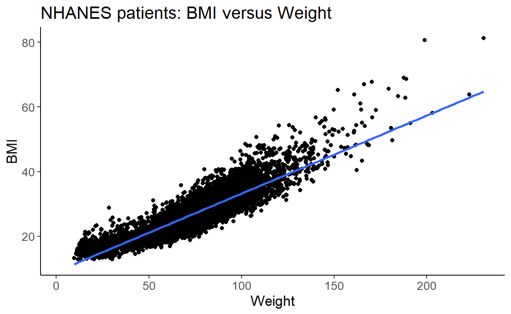
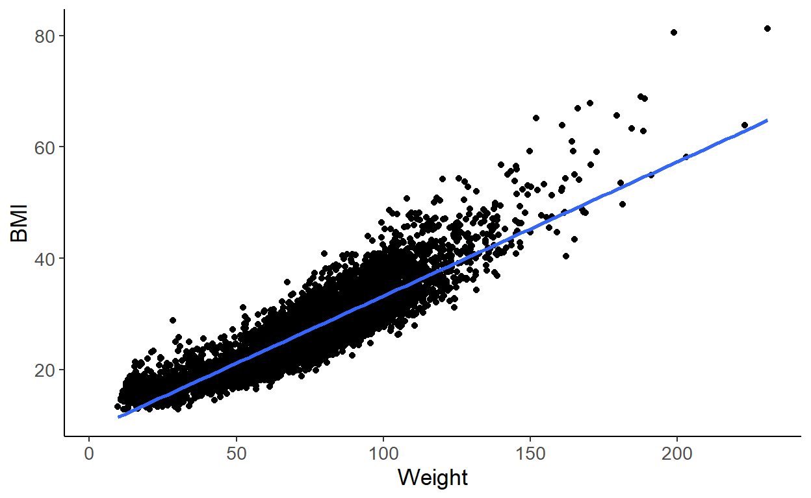

Learning Objectives
- Understand how we can represent different kinds of data
- Understand how to communicate with visualizations
- Understand when visualizations are misleading
Graph literacy https://concord.org/wp-content/uploads/2016/12/pdf/teaching-graph-literacy-across-curriculum.pdf
Why Visualization?
Visualization is good for exploring data because we are really good at evaluating things visually.
- We need to become aware of patterns in the data.
- Sometimes these patterns are desirable:
- Associations

Undesirable Variation
- Sometimes they are not desirable:
- Experimental Artefacts

Outline
- Base Visualizations
- Aesthetics
- Activity

What a graph needs
- Title (what it represents)
- Labeled Axes
- Each aesthetic should have a scale/legend
- How many variables and their types
- Scales
Mapping the data to a visual property
- Title (most plots should have this)
- Axis labels (almost all plots should have this)
- How many variables and their types
- Including ones used to dictate colors, shapes, patterns, sizes, opacities, etc.
- Independent (“predictor”) variables (e.g. time) are usually on the X (horizontal) axis
- Occasionally time is plotted on the vertical axis for specific reasons
- Dependent (“outcome” / “response”) variables are usually on the Y (vertical) axis
Scales (especially log-transformed ones)
The Data (NHANES)
We’re going to look at data from a study called NHANES (National Health and Nutrition Survey).
What does the data actually look like?
Here are the first 10 rows of the data table. Each row of the data corresponds to a patient.
Summary Data
Let’s take a look at a summary of the data.
library(tidyverse)
summary(bmi_diabetes)## BMI Diabetes Gender Age BMIstatus
## Min. :15.02 No :6350 female:3615 Min. :21.00 High:2544
## 1st Qu.:24.20 Yes : 742 male :3479 1st Qu.:33.00 Low :4487
## Median :27.81 NA's: 2 Median :47.00 NA's: 63
## Mean :28.84 Mean :47.71
## 3rd Qu.:32.23 3rd Qu.:60.00
## Max. :81.25 Max. :80.00
## NA's :63Categorical Data
Bar Graphs
Let’s look at Diabetes in our patients
One tool we often use to explore the data is a table, which counts how much of each category is there. Which group is larger?
table(bmi_diabetes$Diabetes)##
## No Yes
## 6350 742Here’s another way to look at the data, a bar plot. You can instantly see which of the groups is larger.
bmi_diabetes %>% ggplot(aes(x=Diabetes)) + geom_bar() + ggtitle("Summary of Patients: Diabetes")
Sometimes it is easier to look at a table, but usually a bar chart will make things more obvious.
Continuous Data
Histograms
A histogram shows the distribution of a continuous variable by splitting it into bins and counting how many observations fall into each bin (left).
set.seed(3)
load(here("data", "bmi_diabetes.rda"))
bmi_diabetes_small <- bmi_diabetes %>% dplyr::sample_n(size=200)
bmi_diabetes_small %>% ggplot(aes(x=BMI)) +
geom_histogram(bins = 10, fill="white", color="black") +
ggtitle("Histogram of Patients of\nNHANES with BMI Values")## Warning: Removed 3 rows containing non-finite values (stat_bin).Definition edited from Mikhail Popov
Histogram: Play with the Bins
To make a histogram, we have to bin the data. or convert the continuous data into ranges.
Try adjusting the number of bins for the histogram. What details gets lost as you adjust the number of bins?
Histogram: Play with the Scale
Try adjusting the scale for the histogram.
All the different ways to represent a continuous variable
Try out all the different ways you can represent a continuous variable in a distribution. Which one do you like?
Quiz Yourself: Distributions of annual income
Take a look at the distributions of annual income graph here and compare 1960 to 2016.
https://flowingdata.com/2016/06/28/distributions-of-annual-income/
Relationships: 2 categorical variables
Now we’re going to delve into ways of visualizing the relationships between two categorical variables.
Association
## Diabetes
## BMIstatus No Yes
## High 56 8
## Low 123 12Proportional versus Frequency
Change the barplot type from regular to proportional. What changes? (look at the scale before/after).
Which barplot type helps you answer the question: “Is there a larger proportion of people with Diabetes with High BMI compared to those who have a low BMI?”
Which barplot helps you understand how many people had Diabetes with low BMI?
Quiz Yourself

What about multiple categories?
We can try to see if multiple categories line up, but one of the issues is tracking size changes.
[The Bechdel Test] is a test to determine whether women are represented fairly in movies.
Look at the graph below. What does the black line in the middle of the graph represent? Are there more movies now that pass the test than fail them?
What about the subcategories? Is it easy or hard to see if they are changing with time?

Bechdel Test and Movies
Relationships: 1 categorical, 1 continuous
Now we’re going to investigate the relationship between one variable that is continuous and another variable that is categorical.
Quick Review of Mathematical Terms
Make sure you understand the following terms before you go on. Here’s a quick review in case you need it.
- percentile
- median
- mean
- mode
Boxplots
When you are trying to understand the relationship between a continuous variable and a categorical variable, you want to use a boxplot.
A boxplot allows you to visually compare the distributions by way of a five number summary which includes:

Understanding Boxplots
Try the different categorical variables out in the data. Is there a difference in medians between the categories? Is that difference meaningful?
Boxplots do lose some detail
Take a look at the boxplot and the violin plot side by side. What do you notice?
Relationships: 2 continuous variables
Scatterplots
Playing with Ranges and Scales
Fit Lines
Relationships: 1 variable versus time
Time Series
Time series data is everywhere.
We are often interested in looking at overall trends, or differences in trends.
Many types of clinical data can be represented as time series:
- Lab Information
- Patient Visits
- Nursing Shifts
Playing with time scales
Try modifying the beginning and end points for the data. Can you make it look like there is an overall downward trend?
Going beyond: Aesthetics
Aesthetic Properties: Color
Beyond our basic plots, we might want to map different measurements to different visual properties.
For the 2x2 bar plots, we mapped Diabetes to color.

For scatterplots, we might want to code categorical data as color like the example below:
## Warning: Removed 1 rows containing missing values (geom_point).
Aesthetic Properties: Shape
Journals used to only allow black and white figures, so color couldn’t be used. One alternative is mapping our Diabetes Variable to shape
## Warning: Removed 1 rows containing missing values (geom_point).
Aesthetic Properties: Cats
(This is just here for your amusement).
library(CatterPlots)##
## Welcome to CatterPlots.x <- -10:10
y <- -x^2 + 10
meow <- multicat(xs=x, ys=y, cat=c(1,2,3), catcolor=list('#33FCFF','#FF0000'), canvas=c(-0.1,1.1, -0.1, 1.1))
Waterfall Plots (optional)
Another way to visualize the relationship between a continuous variable and a categorical variable is a waterfall plot. With a waterfall plot, we plot each continuous value as a single bar and sort them increasing value. Each bar is then colored by the categorical variable.
Each of these bars represents a person who smokes (Y/N) and their age. If you are older than 60, are you less likely to smoke?
load(here("data", "Whickham.rda"))
Whickham %>% sample_n(size=50) %>% arrange(age) %>% mutate(row_num=1:nrow(.)) %>% ggplot(aes(x=row_num, y=age, fill=smoker)) + geom_bar(stat="identity")
Visualization Lies
https://flowingdata.com/2017/02/09/how-to-spot-visualization-lies/ http://serialmentor.com/dataviz/
Partially adapted from:
https://github.com/bearloga/wmf-allhands18 https://github.com/laderast/dsiexplore